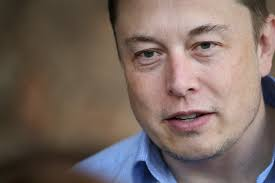
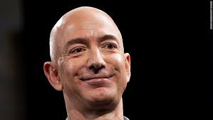
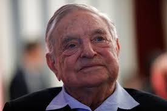

Today's billionaires...Tomorrow your best buddy?

Elon Musk is a South African-born American entrepreneur and businessman who founded X.com in 1999 (which later became PayPal), SpaceX in 2002 and Tesla Motors in 2003. Musk became a multimillionaire in his late 20s when he sold his start-up company, Zip2, to a division of Compaq Computers.
Michael Rubens Bloomberg KBE is an American businessman, politician, philanthropist, and author. He is the majority owner and co-founder of Bloomberg L.P.. He was the mayor of New York City from 2002 to 2013, and was briefly a candidate in the 2020 Democratic presidential primaries.

Jeffrey Preston Bezos is an American internet entrepreneur, industrialist, media proprietor, and investor. He is best known as the founder, CEO, and president of the multi-national technology company Amazon.

George Soros, Hon FBA is a Hungarian-American billionaire investor and philanthropist. As of May 2020, he had a net worth of $8.3 billion, having donated more than $32 billion to the Open Society Foundations. Born in Budapest, Soros survived Nazi Germany-occupied Hungary and moved to the United Kingdom in 1947.
Mark Elliot Zuckerberg is an American media magnate, internet entrepreneur, and philanthropist. He is known for co-founding Facebook, Inc. and serves as its chairman, chief executive officer, and controlling shareholder.